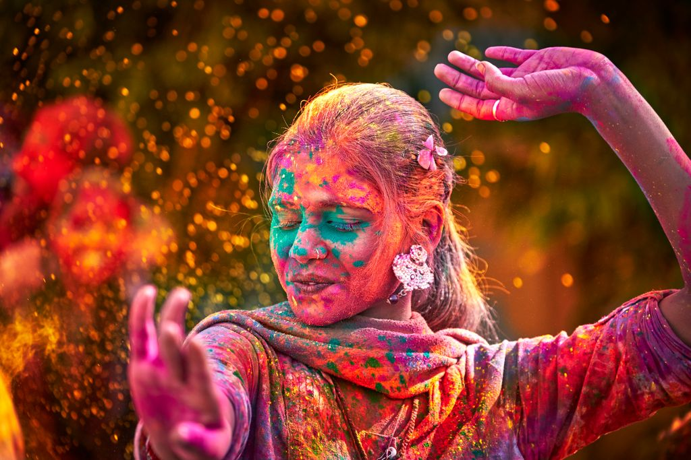
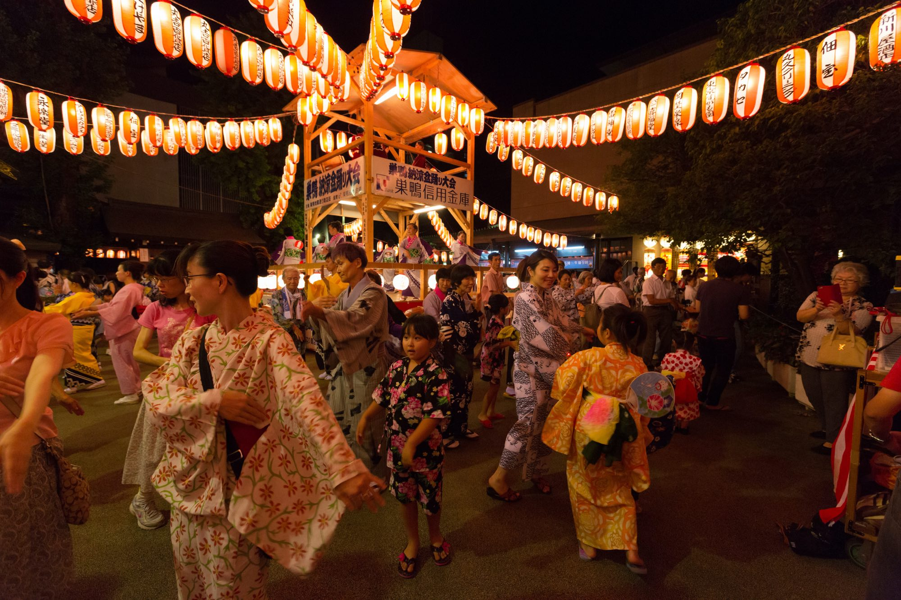
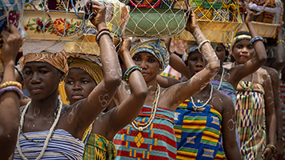
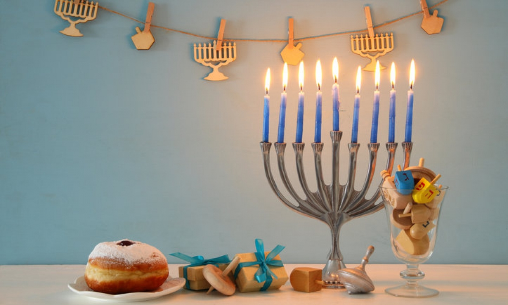

The Four Seasons & Holidays
Holi Festival in the Spring

The Holi festival takes place during the Spring, in the next year of 2021, it will be observed on March 28th and the 29th. It is an Indian holiday and it is celebrated around the world spreading from India to the Western Hemisphere. Also known as the “festival of colors” and the “festival of love”, it was originally a religious holiday but today it has taken on a new meaning. As seen in the image above, it is celebrated with colorful dyes and it is meant to spread a message of joy and unity.
Bon Festival in the Summer

The Bon festival is a holiday celebration that takes place in the summer all throughout Japan that celebrates ancestors. It has origins in Buddhist customs and it is so important that many people schedule vacation around this time and often go back to visit their hometowns and celebrate it there. In the next year of 2021, it will be observed from August 13th through August 15th. As illustrated in the image above, people dance because during Bon it is believed that spirits of passed dead ones come back to visit, similar to El Dia de los Muertos in Mexico.
Festival of the Yams in the Fall

The Festival of the Yams is celebrated in Ghana and it is a holiday that is dedicated to the wish for a plentiful crops season centered around yams. It takes place in either the months of August or September and during celebrations, families compete over who has the most plentiful yam harvest. It is a time to dance and sing.
Hanukkah in the Winter

Hanukkah is a Jewish holiday celebrated across 8 days. It takes place in either November or December and it is a celebration to remember an ancient miracle in which one day’s worth of oil lasted for 8 days in a temple. During this time Jews also light a special candle called a menorah as shown above and celebrate by singing and eating foods such as potato pancakes.